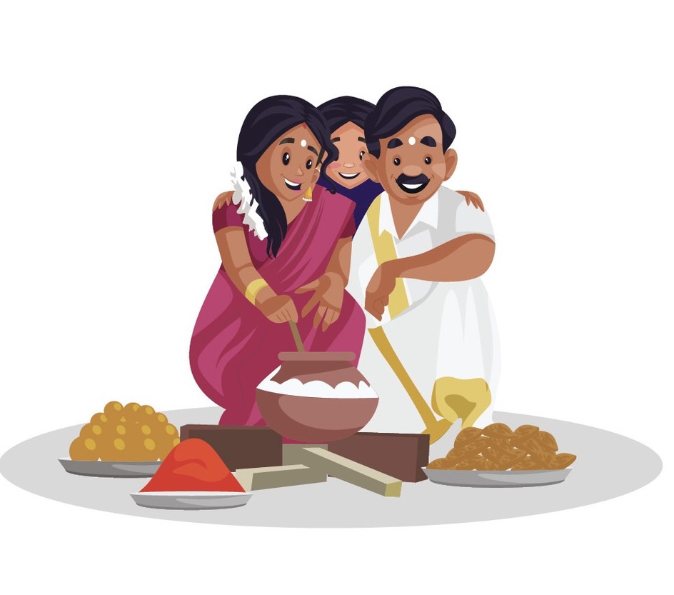
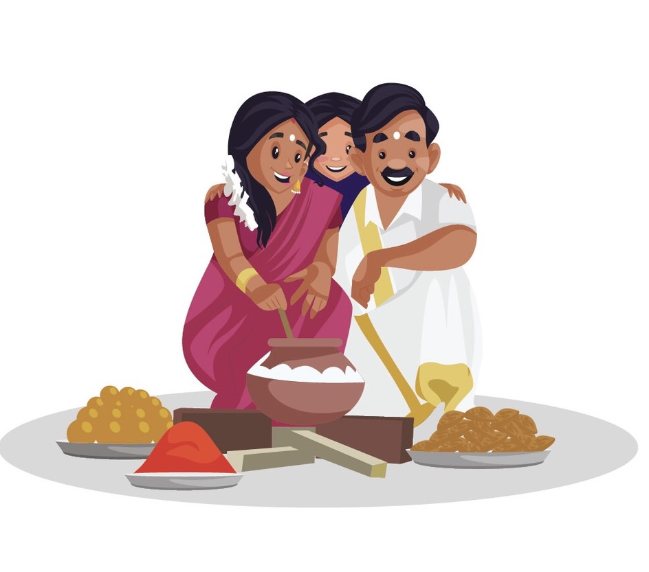

A land of exhilarating and breathtaking beauty, Tamil Nadu has a distinct place in India. The state is home to great historical heritage and tradition.
Tamil Nadu culture is super rich and truly vibrant, The people of the state give immense importance to their culture and traditions, and this is evident from their daily life.


Festival
The Harvest-Festival of Pongal This is one of the most famous festivals of Tamil Nadu dedicated to Sun God or Surya
the festival lasts for four days of Bhoghi, Pongal, Mattu Pongal, and kanuma;
 


food
Tamil Nadu cuisine is a combination of different flavours from a mild tangy Sambar to a dose of hot and spicy Rasam.
The cuisine is majorly dominated by the use of rice, lentils, coconut and much more.
dance
Bharatanatyam is a major genre of Indian classical dance that originated in Tamil Nadu.
Traditionally, Bharatanatyam has been a solo dance that was performed exclusively by women, and expressed South Indian religious themes
dress
Tamil Nadu traditional costumes are very famous for every conventional activity.
The traditional dress of Men in Tamil Nadu is Vesti and The women wear traditional sari and blouse.

Video Summary
Tamil culture refers to the rich and diverse cultural heritage of the Tamil people, who predominantly reside in the Indian state of Tamil Nadu and the northeastern region of Sri Lanka, as well as in various diaspora communities around the world. The Tamils have a long history that stretches back thousands of years, and their culture is characterized by its language, literature, art, music, dance, festivals, cuisine, and traditional practices.